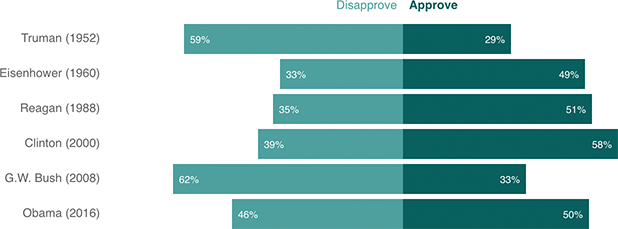

Obama’s Approval Rating Is Middling Among Outgoing President Convention Speakers
These are the approval ratings of past outgoing presidents just before they gave convention speeches for their potential successors. Among those presidents, Obama is neither remarkably loved nor hated — his favorability is around 50 percent right now.
